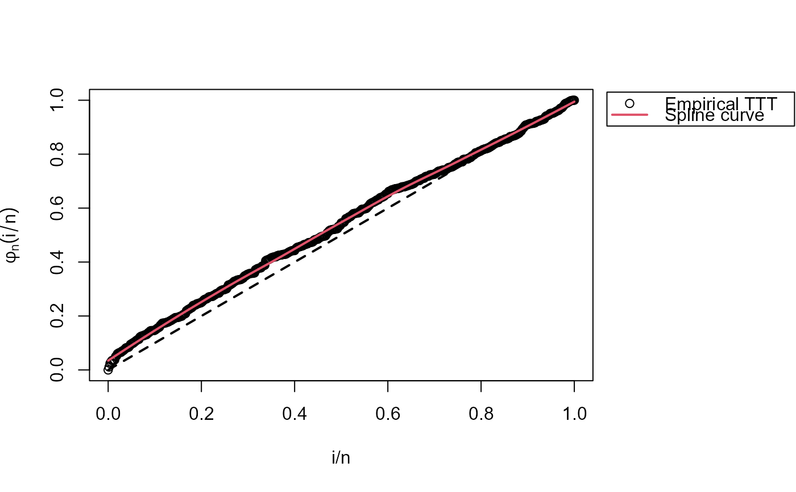

This function can be used to extract initial values found with empirical
time on test transform (TTT) through initValuesOW function.
This is used for parameter estimation in OW distribution.
Arguments
- param
a character used to specify the parameter required. It can take the values
"sigma"or"nu".- initValOW
an
initValOWobject generated withinitValuesOWfunction.
Value
A length-one vector numeric value corresponding to the initial value of the
parameter specified in param extracted from a initValuesOW
object specified in the initValOW input argument.
Details
This function just gets initial values computed with initValuesOW
for OW family. It must be called in sigma.start and nu.start
arguments from gamlss function. This function is useful only
if user want to set start values automatically with TTT plot.
See example for an illustration.
Author
Jaime Mosquera Gutiérrez jmosquerag@unal.edu.co
Examples
# Random data generation (OW distributed)
y <- rOW(n=500, mu=0.05, sigma=0.6, nu=2)
# Initial values with TTT plot
iv <- initValuesOW(formula = y ~ 1)
summary(iv)
#> --------------------------------------------------------------------
#> Initial Values
#> sigma = 0.6
#> nu = 7
#> --------------------------------------------------------------------
#> Search Regions
#> For sigma: all(sigma < 1)
#> For nu: all(nu > 1/sigma)
#> --------------------------------------------------------------------
#> Hazard shape: Unimodal
# This data is from unimodal hazard
# See TTT estimate from sample
plot(iv, legend_options=list(pos=1.03))
#> Warning: The `legend_options` argument of `plot.HazardShape()` is deprecated as of
#> EstimationTools 4.0.0.
#> ℹ Please use `plot.HazardShape()` instead.

# See the true hazard
curve(hOW(x, mu=0.05, sigma=0.6, nu=2), to=100, lwd=3, ylab="h(x)")
# Finally, we fit the model
require(gamlss)
con.out <- gamlss.control(n.cyc = 300, trace = FALSE)
con.in <- glim.control(cyc = 300)
(sigma.start <- param.startOW("sigma", iv))
#> [1] 0.6
(nu.start <- param.startOW("nu", iv))
#> [1] 7
mod <- gamlss(y~1, sigma.fo=~1, nu.fo=~1, control=con.out, i.control=con.in,
family=myOW_region(OW(sigma.link="identity", nu.link="identity"),
valid.values="auto", iv),
sigma.start=sigma.start, nu.start=nu.start)
# Estimates are close to actual values
(mu <- exp(coef(mod, what = "mu")))
#> (Intercept)
#> 0.04594787
(sigma <- coef(mod, what = "sigma"))
#> (Intercept)
#> 0.5548356
(nu <- coef(mod, what = "nu"))
#> (Intercept)
#> 2.184529